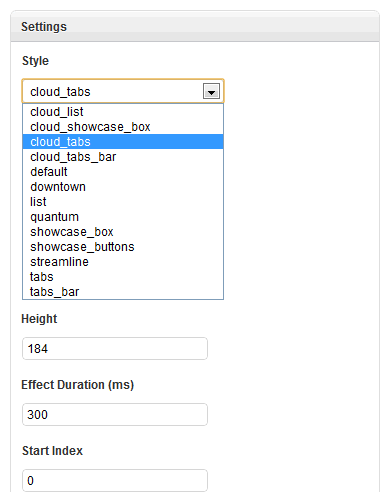

Install Bonus Styles
Bonus styles are additional styles for widgets that are not part of the default Widgetkit distribution. These bonus styles are usually created for a theme to provide a nice integration with Widgetkit. To install a bonus style just follow these few steps.
- Download the latest Widgetkit bonus style package and unpack all files to a directory on your pc.
- Every widget has it's own folder with a /styles subdirectory containing all the additional styles.
- Pick a style and use FTP to upload a style to a the widgets styles directory on your webserver. For example a new Slideshow style would be uploaded to /media/widgetkit/widgets/slideshow/styles for Joomla and to /media/widgetkit/widgets/slideshow/styles for WordPress.
- After you have copied the style you are able to select it as a "Style" option in your widget settings.
